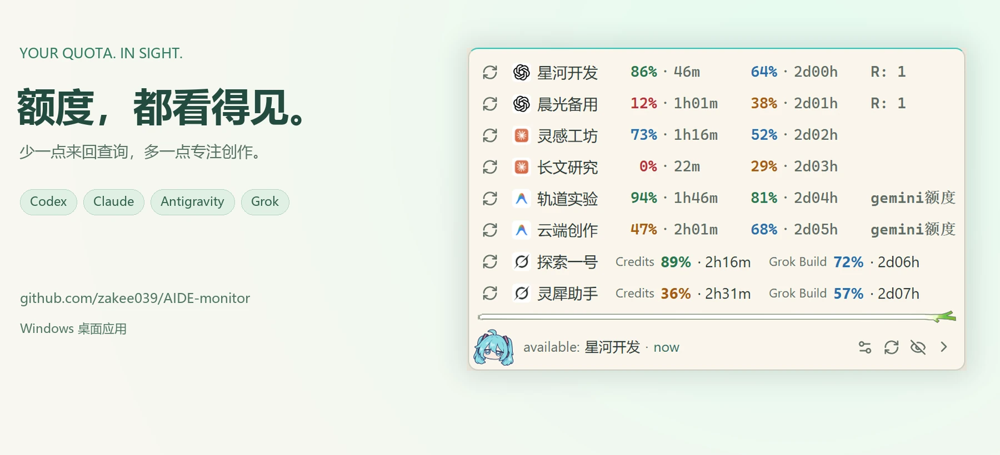

AIDE monitor
YOUR QUOTA. IN SIGHT.
GitHub ↗
下载 Windows 版
↗
AIDE monitor：四大平台额度，一处查看

演示数据
AI 工具越用越多，额度还要来回查？
01 / 09
点击画面继续 · 支持 ← → 方向键
←
→
启用 JavaScript 可翻页浏览。
下载应用
。
 AIDE monitorYOUR QUOTA. IN SIGHT.
AIDE monitorYOUR QUOTA. IN SIGHT.